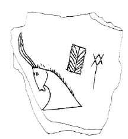

-
TELZb1
Names
TELZb1, HARZb1, TEL Zb 1
Support
Clay vessel
Location
Tel Haror
Findspot
Unavailable

Scribe
Unavailable
Context
Unavailable
Dimensions
Catalogue
Readings
1 1 0 MU none
1 1 1 * none
1 1 2 * none
1 1 2 * none
1 1 3 WA none
1 1 4 TE none
𐘕***𐘮𐘃
MU***WATE
𐘕***𐘮𐘃
MU***WATE
TEL Zb 1
(inv.
no. 20984), Late Bronze III (1700-1600/1550);
E.D. Oren, "Minoan Graffito
from Tel Haror (Negev,
Israel),"
Cretan Studies
5 (1996) 91-118;
the site is in the northern Negev (ancient Gerar), not the more famous
site of Tel Haror in the northern Galilee.
BOS
/ TELA+TE /
FIC
THERA
Commentary © John Younger
References
papers/TELZb1.pdf